Rutas
Ruta 1: Valle de Theth
Tipo: Senderismo
Ruta para divisar el valle del Theth, el valle de Valbona junto con su parque natural y cascadas
Duración: PT8h
Personas adecuadas: Sin niños
Lugar de inicio: Valbona
Fecha inicio: 2023-09-01
Hora inicio: 2023-09-01T09:00:00
Medio transporte: A pie
Agencia: Sin agencia
Coordenadas: 42.446872, 19.882660
Altitud: 950m
Recomendación: 9/10
Referencias:
Galería de fotos
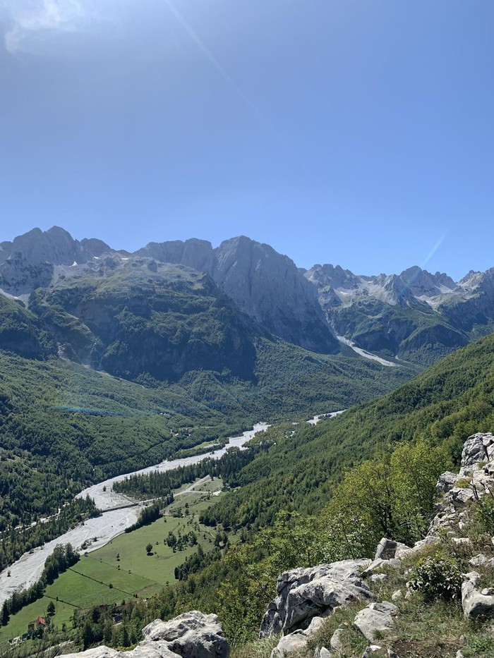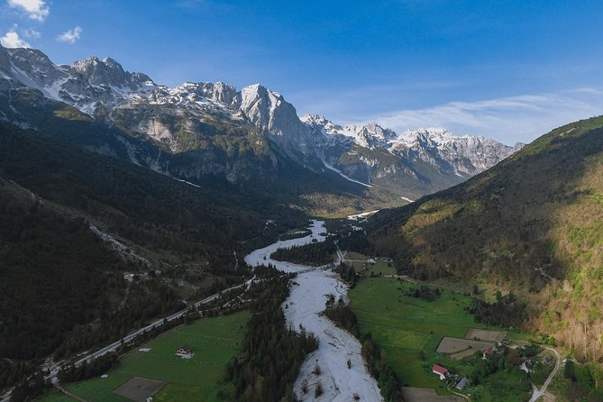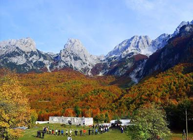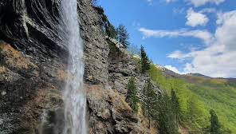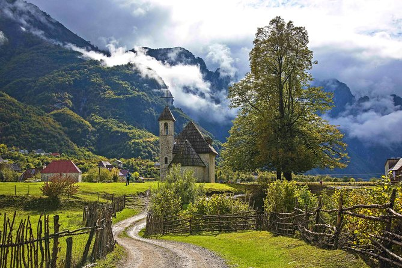Hitos
- Rrethi i Jubanit
- Mirador de Rrethi i Jubanit
- Coordenadas: 19.871763, 42.440471
- Altitud: 1229m
- Distancia al hito anterior: 1.13km
- Valle de Valbona
- Valle de Valbona
- Coordenadas: 19.873006, 42.426770
- Altitud: 990m
- Distancia al hito anterior: 1.5km
- Livadhi i Shkembit
- Zona de senderismo
- Coordenadas: 19.865781, 42.420257
- Altitud: 1022m
- Distancia al hito anterior: 0.9km
- Ujevara e Rrogamit
- Cascada de Ujevara e Rrogamit
- Coordenadas: 19.826642, 42.407887
- Altitud: 1305m
- Distancia al hito anterior: 3.4km
- Theth
- Villa de Theth
- Coordenadas: 19.768166, 42.404576
- Altitud: 820m
- Distancia al hito anterior: 4.8km
Ruta 2: Ruta gastronómica en Tirana
Tipo: Gastronómica
Ruta gastronómica en Tirana: desayuno, almuerzo y comida
Duración: PT8H
Personas adecuadas: Gente con ganas de comer
Lugar de inicio: Tirana
Fecha inicio: 2023-04-14
Hora inicio: 2023-04-14T09:00:00
Medio transporte: A pie
Agencia: Sin agencia
Coordenadas: 41.328444, 19.817940
Altitud: 108m
Recomendación: 9/10
Referencias:
Galería de fotos
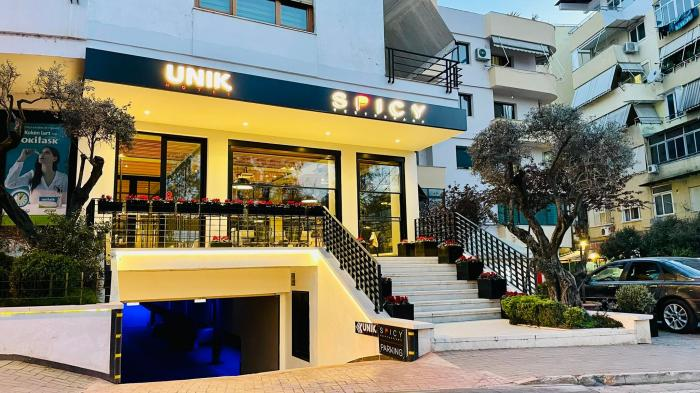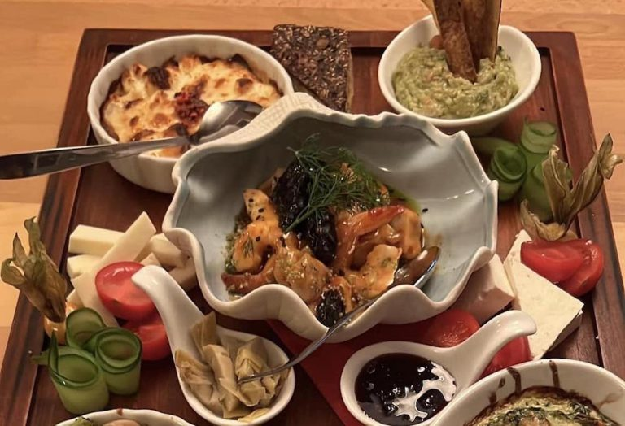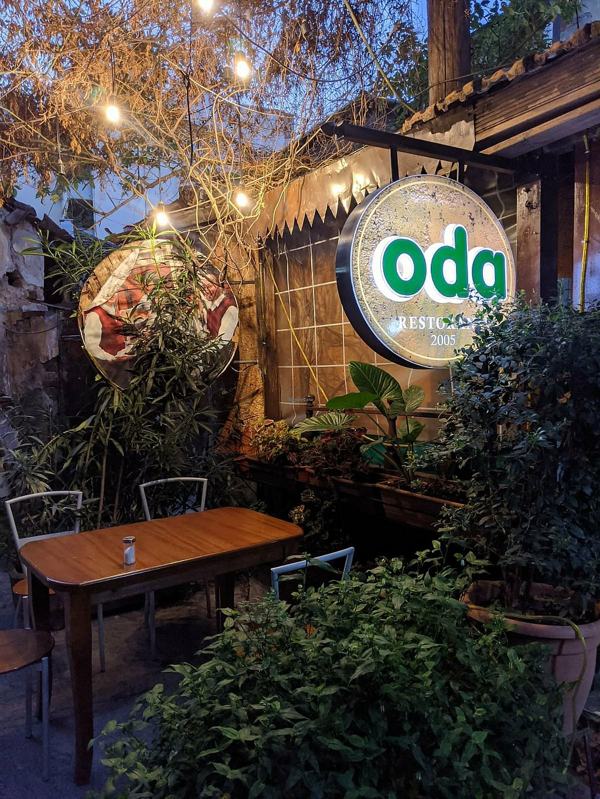Hitos
- Spicy Restaurant
- Restaurante de comida mediterránea
- Coordenadas: 19.812073, 41.307617
- Altitud: 121m
- Distancia al hito anterior: 5km
- Otium Restaurant
- Restaurante de comida europea con opciones sin gluten
- Coordenadas: 19.814207, 41.321814
- Altitud: 107m
- Distancia al hito anterior: 3.7km
- Oda Restaurant
- Restaurante de comida tradicional albanesa
- Coordenadas: 19.824662, 41.331429
- Altitud: 118m
- Distancia al hito anterior: 1.9km
Ruta 3: Ruta de visita de los lugares emblemáticos de Tirana
Tipo: Cultural
Ruta de museos y sitios emblemáticos de la ciudad de Tirana
Duración: PT6H
Personas adecuadas: Personas con aguante
Lugar de inicio: Tirana
Fecha inicio: 2023-11-26
Hora inicio: 2023-11-26T05:00:00
Medio transporte: A pie
Agencia: Sin agencia
Coordenadas: 41.328444, 19.817940
Altitud: 108m
Recomendación: 7/10
Referencias:
Galería de fotos
 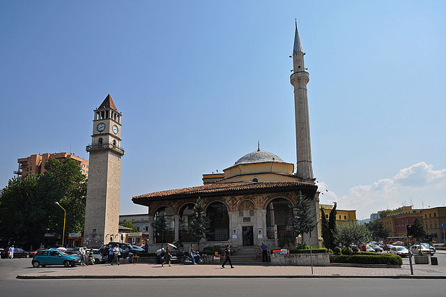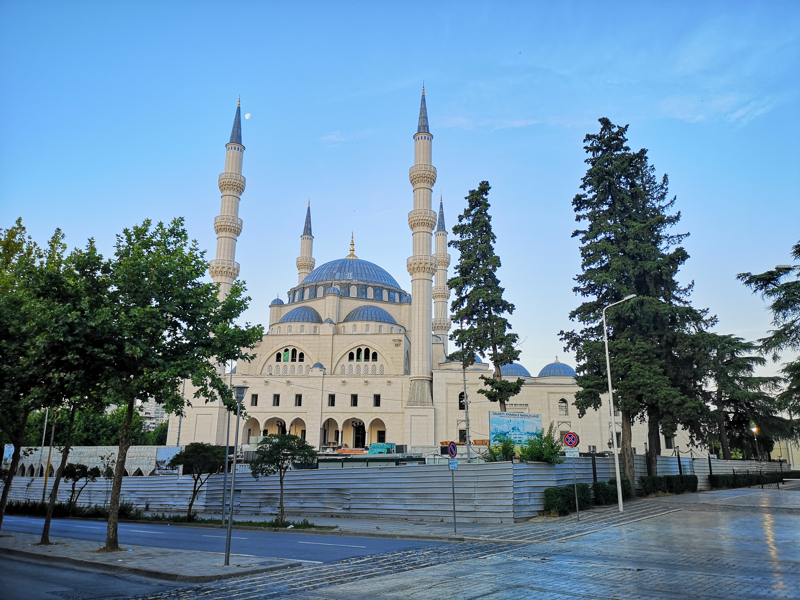
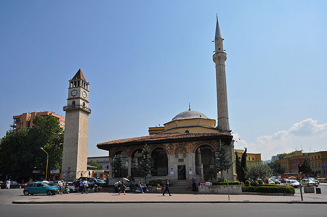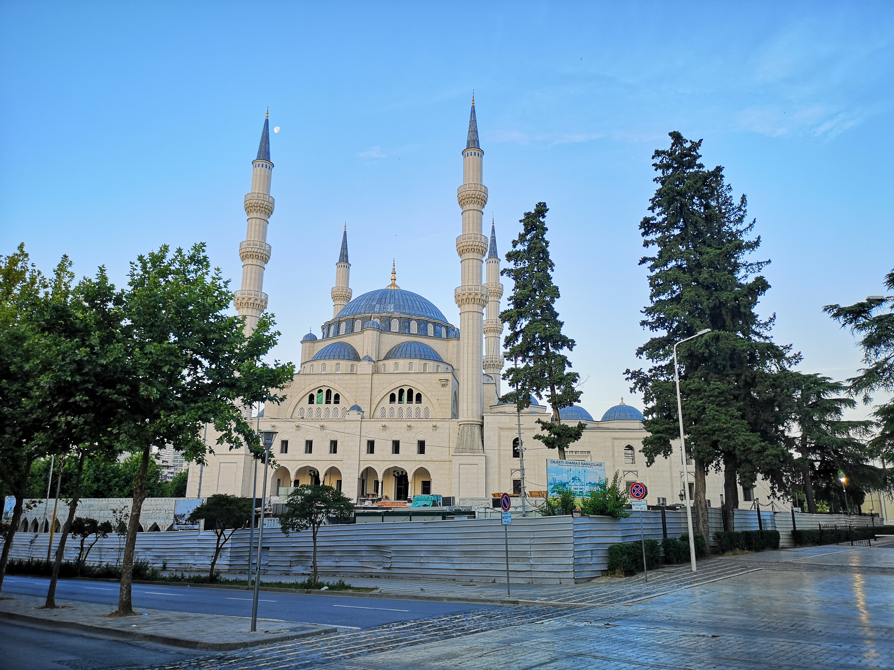Hitos
- Museo Historico Nacional
- Museo más grande que ver en Albania
- Coordenadas: 19.812073, 41.307617
- Altitud: 121m
- Distancia al hito anterior: 0.65km
- Mezquita de Et'hem Bey
- Mezquita del siglo XVIII en el centro de la ciudad
- Coordenadas: 19.818895, 41.327671
- Altitud: 112m
- Distancia al hito anterior: 0.55km
- Mezquita Namazgah
- Mezquita más grande de los Balcanes y uno de los edificios más impresionantes que ver en Tirana
- Coordenadas: 19.824506, 41.325597
- Altitud: 111m
- Distancia al hito anterior: 0.7km